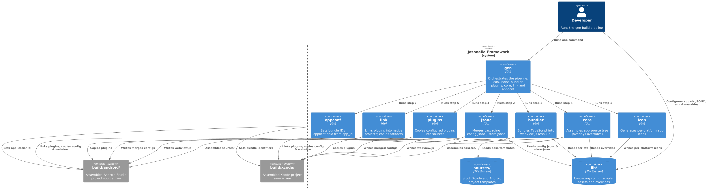
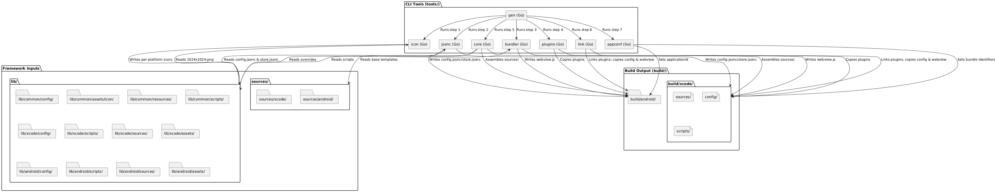
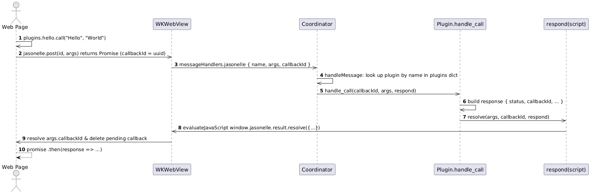
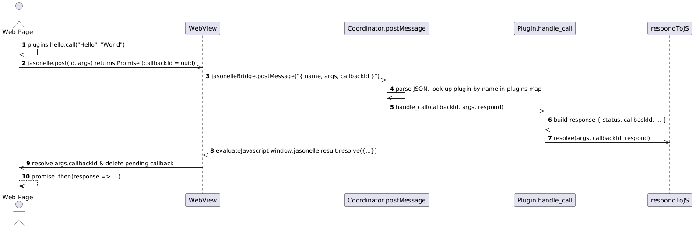

Architecture
This document outlines the architecture for the Jasonelle cross-platform web wrapper generator framework.
Architecture Overview
The system is designed around a cascading asset injection strategy, a modular CLI approach, and a strictly separated directory structure.
-
Cascading Configuration & Assets:
lib/common/is the base layer. Platform directories (lib/xcode/,lib/android/) override or extend it — same path, platform wins. -
Native File Overrides: Placing a file in
lib/<platform>/sources/automatically replaces the corresponding file fromsources/<platform>/during the build. -
Store Metadata:
config/store.jsoncand.envmanage store metadata and secrets.task jsoncmerges them per platform intobuild/xcodeandbuild/android. -
TypeScript Bundling: the
bundlertool merges TypeScript files fromlib/commonandlib/<platform>into a singlewebview.js. Common scripts are copied first, platform scripts overlay on top. -
Unified Build Pipeline: the
gentool (run via theTaskfilegentask) orchestrates the Go toolsicon,jsonc,bundler,plugins,core,linkandappconfto assemble bothbuild/xcodeandbuild/androidfrom the samelib/andsources/inputs.
Build Pipeline
The build pipeline turns the user workspace (lib/) and the stock templates
(sources/) into two runnable native projects under build/. The gen tool
(task gen, or tools/gen/dist/gen-<os>-<arch>) runs the steps in order for
both platforms:
| Step | Tool | Writes to | Responsibility |
|---|---|---|---|
1 |
|
|
Generates the Android and Xcode app icons from
|
2 |
|
|
Merges the cascading |
3 |
|
|
Bundles the TypeScript scripts ( |
4 |
|
|
Copies the plugins declared in the merged per-platform configs so only configured plugins reach the project. |
5 |
|
|
Assembles the app source tree ( |
6 |
|
|
Links the plugin projects into the Xcode workspace, the Android Gradle files
and the Application project, and copies the built |
7 |
|
|
Rewrites |
After the last step each build/<platform>/ directory contains a complete,
configured native project ready to open and build.
C4 Architecture Diagram
The diagram below shows the current architecture. The gen tool runs the
icon, jsonc, bundler, plugins, core, link and appconf Go tools in
order for both platforms, reading from lib/ and sources/ and writing to
build/.

Architecture Flow Diagram
The diagram below shows the data flow through the build pipeline.

Directory Structure
-
.gitignore: Excludes.envandbuild/. -
sources/: Base project templates.-
sources/xcode/: Xcode project template (Swift, storyboards, workspace). -
sources/android/: Android Studio project template (Kotlin, Compose, Gradle).
-
-
lib/: User workspace for configurations and overrides.-
lib/common/:-
.env: Secret keys for tools and stores. -
config/config.jsonc: Foundational configuration. -
config/store.jsonc: Shared app store metadata. -
config/bundler.json: TypeScript config for esbuild. -
assets/icon/1024x1024.png: Base icon for store listings. -
resources/: Raw files copied to the app bundle. -
scripts/main.ts: Base TypeScript entry point for the webview.
-
-
lib/android/:-
config/config.jsonc: Android configuration overrides. -
config/store.jsonc: Play Store specific overrides. -
scripts/main.ts: Android TypeScript overrides. -
sources/: Native file replacements (e.g., customMainActivity.kt). -
assets/: Play Store specific assets. -
resources/: Raw files copied to the Android app bundle.
-
-
lib/xcode/:-
config/config.jsonc: Xcode configuration overrides. -
config/store.jsonc: App Store specific overrides. -
scripts/main.ts: Xcode TypeScript overrides. -
sources/: Native file replacements (e.g., customContentView.swift). -
assets/: App Store specific assets. -
resources/: Raw files copied to the Xcode app bundle.
-
-
-
tools/: CLI tools and vendored binaries.-
tools/gen/: Runs the full build pipeline (icon,jsonc,bundler,plugins,core,link,appconf) as theTaskfilewould (Go). -
tools/icon/: Generates per-platform app icons from a 1024x1024 PNG (Go). -
tools/jsonc/: Merges cascading JSONC config files (Go). -
tools/bundler/: Bundles TypeScript intowebview.jsvia esbuild (Go). -
tools/plugins/: Copies the configured plugins into the build sources (Go). -
tools/core/: Assembles the app source tree, overlaying overrides (Go). -
tools/link/: Links plugins into the native projects and copies app artifacts (Go). -
tools/appconf/: Sets the app identifiers from the merged configs (Go). -
tools/vendor/esbuild/: Vendored esbuild binary for TypeScript bundling.
-
-
build/: Generated output (git-ignored).-
build/xcode/: Assembled Xcode project.-
config/: Mergedconfig.jsoncandstore.jsonc. -
scripts/: Bundledwebview.js. -
sources/: Assembled Xcode source tree with linked plugins and app artifacts.
-
-
build/android/: Assembled Android Studio project.-
config/: Mergedconfig.jsoncandstore.jsonc. -
scripts/: Bundledwebview.js. -
sources/: Assembled Android source tree with linked plugins and app artifacts.
-
-
Xcode (iOS) Source Project
The iOS source project for Jasonelle. It is a native SwiftUI app that renders a
website inside a WKWebView and bridges JavaScript calls to native Swift
plugins through a bidirectional message channel.
Repository layout
| Path | Contents |
|---|---|
|
Xcode workspace that groups the app, the kernel framework and the plugins. |
|
The iOS app target. Contains SwiftUI views, resources ( |
|
A reusable framework consumed by the app: |
|
A sample plugin that demonstrates the native–JavaScript bridge. |
|
A plugin that reports device information to JavaScript. |
|
A plugin that persists web view cookies in the iOS Keychain. |
|
A plugin that provides Sign in with Apple. |
|
SwiftLint rules. |
|
Formatting rules for C/C++/Objective-C sources. |
|
|
Architecture
Jasonelle iOS follows a layered architecture. The Application layer owns the SwiftUI lifecycle and the registered plugin instances. The JLKernel layer provides the web view, the JavaScript bridge and the message routing. The plugins layer implements native features callable from JavaScript.
The JavaScript Bridge
The bridge is a bidirectional message channel between the page loaded in the
WKWebView and native code.
-
WebView.jsBridgeScriptis injected at document start and defines thewindow.jasonelleobject withpost(name, args),result.resolve,result.rejectandplugin.init. -
Each plugin’s
Plugin.jsis injected at document end and registers itself onwindow.jasonelle.plugins.<name>. -
JavaScript posts a message to
window.webkit.messageHandlers.jasonelle. -
The
Coordinatorresolves the message to a plugin and invokeshandle_call(callbackId:args:respond:); plugins reply throughresolveorreject, which evaluatewindow.jasonelle.result.resolve|reject(…)back in the page.

The message body is a dictionary:
{ "name": "com.jasonelle.plugins.hello", "args": ["Hello", "World"], "callbackId": "<uuid>" }name is the plugin id (reverse domain notation), which is also the key in
the plugins dictionary registered by the application.


JLKernel components
| Component | Responsibility |
|---|---|
|
SwiftUI |
|
|
|
Base class every plugin subclasses. Provides |
|
Enum of native events with a static plugin registry, |
|
Loads |
|
Structured logging over |
|
Reads the bundled |
|
Verifies a Jasonelle license key; aborts on physical devices without a license, logs a reminder in the simulator. |
Plugins
Each plugin is an independent Swift module (a framework inside the workspace)
that subclasses JLKernel.Plugin. Plugins are composed by the Application in
Plugins.swift, which imports and instantiates them. Keys must match the
plugin id used in JavaScript (window.jasonelle.plugins.<name>).
| Plugin | Native API | JS object |
|---|---|---|
|
|
|
|
|
|
|
|
|
|
Sign in, credential state and native button via |
|
Development
-
Open
Jasonelle.xcworkspacein Xcode to build theApplicationscheme. -
Unit tests live in each module’s
<Module>Teststarget (JLKernelTests,JLPluginHelloTests,JLPluginDeviceTests,JLPluginCookiesTests,JLPluginAppleSignInTests,ApplicationTests). -
Run SwiftLint with
task lint(auto-fix withtask fix). -
Each module ships a DocC catalog (
*.docc) describing its public API. Open the workspace in Xcode and select "Documentation" in the navigator to browse them.
Android Source Project
The Android source project for Jasonelle. It is a native Kotlin app (Jetpack
Compose) that renders a website inside a WebView and bridges JavaScript calls
to native Kotlin plugins through a bidirectional message channel, mirroring the
iOS (Xcode) implementation.
Repository layout
| Path | Contents |
|---|---|
|
Gradle wrapper used to build every module. |
|
Declares the modules: |
|
The Android app module. Contains the Compose |
|
The core library: |
|
A sample plugin that demonstrates the native–JavaScript bridge. |
|
A plugin that reports device information to JavaScript. |
|
A plugin that persists web view cookies in encrypted storage. |
|
Local SDK path (gitignored, not committed). |
|
|
Architecture
Jasonelle Android follows the same layered architecture as the iOS project. The Application module owns the activity lifecycle and the registered plugin instances. The JLKernel module provides the web view, the JavaScript bridge and the message routing. The plugins modules implement native features callable from JavaScript.

The JavaScript Bridge
The bridge is a bidirectional message channel between the page loaded in the
WebView and native code.
-
The native side registers the
Coordinatoras a JavaScript interface namedjasonelleBridgewithaddJavascriptInterface. -
JasonelleBridge.JS_BRIDGE_SCRIPTdefineswindow.jasonellewithpost(name, args),result.resolve,result.rejectandplugin.init. -
Each plugin’s
Plugin.jsregisters itself onwindow.jasonelle.plugins.<name>. -
poststringifies{ name, args, callbackId }and callswindow.jasonelleBridge.postMessage(json). -
The
Coordinator.postMessage(@JavascriptInterface) parses the JSON, looks up the plugin and invokeshandle_call(callbackId, args, respond). Plugins reply throughresolveorreject, which evaluatewindow.jasonelle.result.resolve|reject(…)back in the page on the main thread.
Because the bridge script also installs a window.webkit.messageHandlers.*
shim, the same Plugin.js files work unchanged on Android and iOS.

The message body (JSON stringified by post) is:
{ "name": "com.jasonelle.plugins.hello", "args": ["Hello", "World"], "callbackId": "<uuid>" }name is the plugin id (reverse domain notation), which is also the key in
the plugins map registered by the application.
Script injection
Android WebView has no document-start/end user scripts, so the bridge, plugin
and app scripts are all evaluated from onPageFinished, in the same order as
iOS injects them. The jasonelleBridge native interface is available before
the first load, so early page code can still call it.


JLKernel components
| Component | Responsibility |
|---|---|
|
Compose composable built on |
|
|
|
Holds |
|
Base class every plugin subclasses. Provides |
|
Enum of native events with a static plugin registry, |
|
Loads |
|
Structured logging with |
|
Reads the bundled |
|
Verifies a Jasonelle license key. |
Plugins
Each plugin is an independent Gradle module that subclasses JLKernel.Plugin
(imported as KernelPlugin to avoid the class-name clash). Plugins are
composed by the Application in Plugins.kt, which instantiates them; the
Cookies plugin receives the application Context. Keys must match the plugin
id used in JavaScript (window.jasonelle.plugins.<name>).
| Plugin | Native API | JS object |
|---|---|---|
|
|
|
|
|
|
|
|
|
Development
-
Build all modules with
task build(./gradlew assembleDebug). -
Run
task test(./gradlew test) for the JVM unit tests in every module (JLKernelTests,JLPluginHelloTests,JLPluginDeviceTests,JLPluginCookiesTests). -
Build just the app APK with
task assemble(./gradlew :Application:assembleDebug), output inApplication/build/outputs/apk/debug/. -
Run lint with
task lint. -
Every plugin ships a
docs/<Plugin>.mdfile describing its native code and JavaScript bridge.